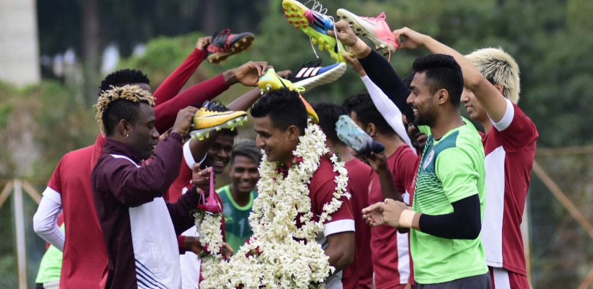

Posted at Date: February 28, 2019
Credit : রাইট স্পোর্টস ওয়েব ডেস্ক
মেহতাবের কঠিন-কঠোর গদ্য

লালহলুদ জার্সিতে তাঁর পিঠেও ১৪ নম্বর। মেহতাব হোসেনকে কি ‘গরীবের গৌতম সরকার’ বলা যায়? বলতে অবশ্য কী-ই বা যায়-আসে! আজকের এই সমাজ-মাধ্যমের যুগে তাঁকে তো ‘গরীবের মাকালেলে’-ও বলা হয়েছে। ফরাসি সেই ক্লদ মাকালেলে যাঁকে রেয়াল মাদ্রিদ ছেড়ে দেওয়ার পর জিনেদিন জিদান বলেছিলেন সখেদ, ইঞ্জিনটাই আর রইল না!
ভারতীয় বৃত্তে মেহতাব থেকে গেলেন সেই দলে, আন্তরিক প্রচেষ্টা সত্ত্বেও জাতীয় স্তরে সর্বোচ্চ সাফল্য যাঁর অধরা। আই লিগ পাননি, আইএসএল-ও নয়। খুব কাছে গিয়েই ফিরতে হয়েছে দুটি ট্রফির ক্ষেত্রেই। কেরালা ব্লাস্টার্সের হয়ে তো দুবার আইএসএল ফাইনালেও পৌঁছেছিলেন। প্রাপ্তির খাতায় ফেডারেশন কাপ, বার পাঁচেক। কলকাতা লিগে ইস্টবেঙ্গলের হয়ে টানা সাতবার চ্যাম্পিয়ন। গত মরসুমে (২০১৭-১৮) আর ছিলেন না বলে আটে আট হয়নি। দেশের জার্সিতেও ততটা উজ্জ্বল নয় তাঁর ফুটবলার জীবন। কিন্তু, মেহতাব হোসেনকেও, শুধুই সংখ্যায় মাপা যায় কি? বৃহস্পতিবার মোহনবাগানের অধিনায়ক হয়ে ২১ বছরের বর্ণময় ফুটবলার জীবনে ইতি টানবেন। ইন্ডিয়ান অ্যারোজ-এর বিরুদ্ধে, যুবভারতী ক্রীড়াঙ্গনে। এমন খেলা যার সঙ্গে আই লিগ খেতাবের কোনও সম্পর্ক নেই। ক্ষীণ একটা ব্যাপার, সুপার লিগে মোহনবাগানের থাকা। তা নিয়েও বিরাট সমস্যা নেই। শেষ পর্যন্ত থাকবে মোহনবাগান, আশা করাই যায়। কিন্তু, মেহতাবের শেষ ম্যাচের আবহ বড্ড ম্যাড়মেড়ে, সন্দেহ নেই। এমন পরিস্থিতি যাঁর সঙ্গে মেহতাবের ফুটবলার-জীবন একেবারেই মেলে না। মেহতাব মানে লড়াই, জেদ। মাঝমাঠে প্রতিটি বলের জন্য মরণপণ। প্রয়াত কোচ অমল দত্তর বেশ পছন্দের ফুটবলার। ‘স্ন্যাচিংটা দুরন্ত,’ বলতেনও অমল দত্ত। বিপক্ষের আক্রমণ থামিয়ে দিতে হবে মাঝমাঠে, সেরা ছন্দের মেহতাব মানে কোচের চিন্তা কম অনেকটাই। তবু, মেহতাবের লড়াকু ফুটবল নিয়ে কাব্য হবে না। পদ লালিত্য ঝঙ্কার নেই। সূক্ষ্মতা নয়, রুক্ষতার জয়গান। কঠিন-কঠোর গদ্য। পালকিবাহক।
ফিলিপ ডি রাইডার তাঁকে প্রথম নিয়ে এসেছিলেন মাঠের সেই জায়গায় যেখান থেকে খেলা নিয়ন্ত্রণ করতে পারেন। পেছন থেকে গোটা মাঠ দেখতে পাওয়া। লম্বা লম্বা পাস, কখনও দুই উইংয়ে, কখনও বিপক্ষ বক্সের মাঝখানে। ফ্রি কিক নিতেন নিয়মিত, কর্নার, সেট-পিস বিশেষজ্ঞ বলা হত। বল কেড়ে নেওয়ার প্রশ্নে এক সময় দেশে এক নম্বরেই। কিন্তু, সেই কেড়ে-নেওয়া বল নিয়ে কী করবেন, ভাবনায় এবং প্রয়োগে ততটা সৃষ্টিশীল নন। তবু, ট্রেভর জেমস মর্গ্যান আর মেহতাব-ভরসা ইস্টবেঙ্গলকে টানা চারবার (২০০৯-১০ থেকে ২০১২) নিয়ে গিয়েছিল ফেডারেশন কাপ ফাইনালে। মাত্র একবার, ২০১১ ফাইনালে সালগাওকারের কাছে হার। বাকি তিনবারই ট্রফি লালহলুদ তাঁবুতে। আর সেই সাফল্যে মেহতাবের অবদান অনস্বীকার্য। ২০০৯ সালে ফেডারেশন কাপের সেমিফাইনালে মোহনবাগানকে ২-০ হারিয়েছিল ইস্টবেঙ্গল, দ্বিতীয় গোল মেহতাবের। লালহলুদ সমর্থকরা কী করে ভুলবেন! চেয়েছিলেন, অন্তত একবার আই লিগ এনে দিতে, লালহলুদ শিবিরে। সেই সমর্থকদের জন্য, যাঁরা তাঁকে রেখেছিলেন নয়নের মণি করেই। চেষ্টায় খামতি ছিল না। কিন্তু ফুটবল, বরাবরই, দলগত খেলা। তাঁর দল, সতীর্থরা, তিনি নিজেও হয়ত, প্রয়োজনের সময় সেভাবে জ্বলে উঠতে পারেননি। কখনও আবার সঙ্গে থাকেনি ভাগ্যও, ট্রফি জেতার জন্য যা জরুরিও। এ-ও সত্যি, শেষ বছর পনের, যে সময়ে তিনি খেলেছেন, ভারতসেরা ট্রফি আনার ক্ষেত্রে বাংলার ফুটবলে খরা।
আগেও একবার অবসর ঘোষণা। ফিরে এসেছিলেন, হয়ত সেই অতৃপ্তির টানেই। পূর্ণ হয়নি। সরে যাওয়ার সিদ্ধান্ত জানিয়ে বলেছিলেন, ‘শেষ ম্যাচটা খেলতে চেয়েছিলাম কলকাতায়। এখনই সময় সরে যাওয়ার। যাঁদের যাঁদের পেয়েছি কোচ হিসাবে, প্রত্যেককে ধন্যবাদ। বিশেষভাবে কৃতজ্ঞতা জানাই খালিদ জামিল এবং শঙ্করলাল চক্রবর্তীকে, যাঁদের জন্য এভাবে সরে যাওয়ার সুযোগটা পাচ্ছি, ফুটবলার জীবনের গোধূলিতে। আই লিগ পাইনি, আক্ষেপ থেকেই গেল। কী আর বলব, মেনে নিতেই হবে, কপালে ছিল না!’ বড় ক্লাবের হয়ে খেলতে শুরু করেছিলেন মোহনবাগানে, শেষটাও করছেন সবুজমেরুন জার্সিতেই। অবসর নেওয়ার ম্যাচে অধিনায়কের আর্ম-ব্যান্ড তাঁর, এই সিদ্ধান্তে অবশ্যই সাধুবাদ। মেহতাবকে শেষবার যুবভারতীতে খেলতে দেখতে সবুজমেরুন সমর্থকরা কি ফেব্রুয়ারির শেষ সন্ধ্যায় হাজির থাকবেন যুবভারতীর গ্যালারিতে? গর্জে উঠবে গ্যালারি ‘মেহতাব-মেহতাব’ স্লোগানে, শেষবার? শুধু মোহনবাগান সমর্থকরাই বা কেন, ইস্টবেঙ্গল সমর্থকরাও আসুন না যুবভারতীতে বৃহস্পতিবার, লালহলুদ পিঠে-চোদ্দ জার্সিগুলো ঝলমলিয়ে আর একবার। লড়াই-ঝগড়া, প্রাপ্তি-অপ্রাপ্তি ছেড়ে, শুধু্ই মেহতাবের জন্য!
Top Stories

Calcutta Sports Journalists' Club requests the pleasure of your company at its annual awards functionMore...

Jasprit Bumrah has been declared fit and he will now be available for selection for India's third Test against England at Trent Bridge. More...

Ronaldo has increased Juventus' standing among Europe's elite. More...